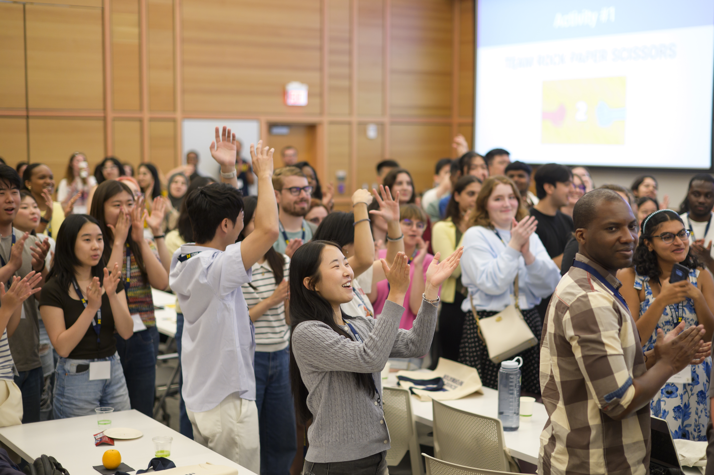

Complete, Reflect, and Move Forward

Ending an engaged learning experience includes completing the work, communicating results, closing relationships
responsibly, and reflecting on your learning and impact. A strong ending gives the partner what they need to
continue the work, makes the team's decisions understandable, and recognizes the contributions of the people
involved. Plan the transition early so that closing the project is an intentional part of the experience rather
than a rushed final task.
Steps for Ending the Experience
Complete and Transition the Work
Confirm that the project deliverables are complete and provide the partner with the files, information, or
instructions they need. Check that materials are organized, accessible, and labeled clearly, and explain any
technical requirements or limitations that may affect future use. Review the final work with the partner,
confirm what has been accepted, and identify who is responsible for maintaining or updating it after the
course ends.
Communicate Results
Explain what the team accomplished, what was learned, and what limitations or future improvements should be
considered. Present the results in a way that reflects the partner's goals and the intended audience, using
evidence to describe progress and impact. Be honest about unfinished work, constraints, and uncertainty so
that the partner can make informed decisions about possible next steps.
Reflect on Learning and Impact
Consider how the experience changed your skills, perspective, understanding of the community, and approach to
future projects. Ask what you learned from the partner and community, which assumptions were challenged, and
how your choices affected others. Identify specific skills, habits, and questions you will carry into future
courses or professional work, and acknowledge both the project's successes and the areas that could improve.
